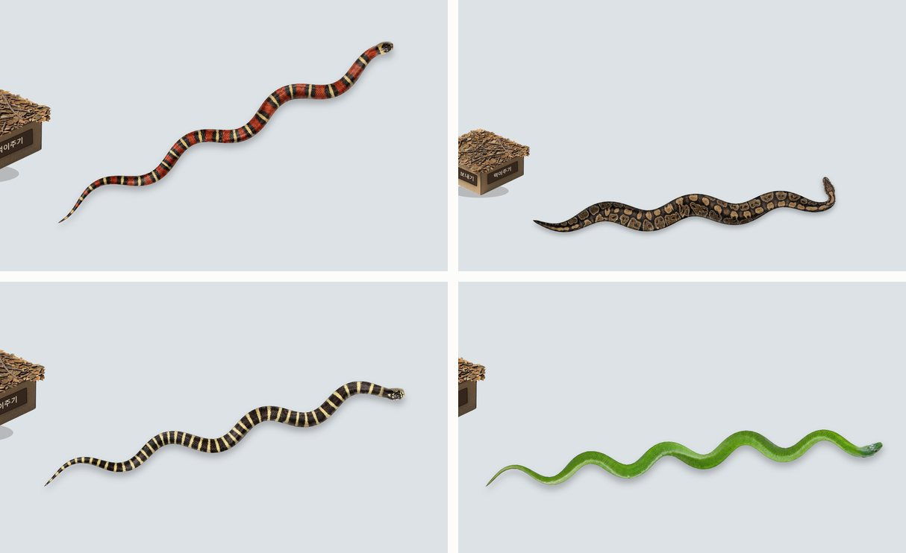
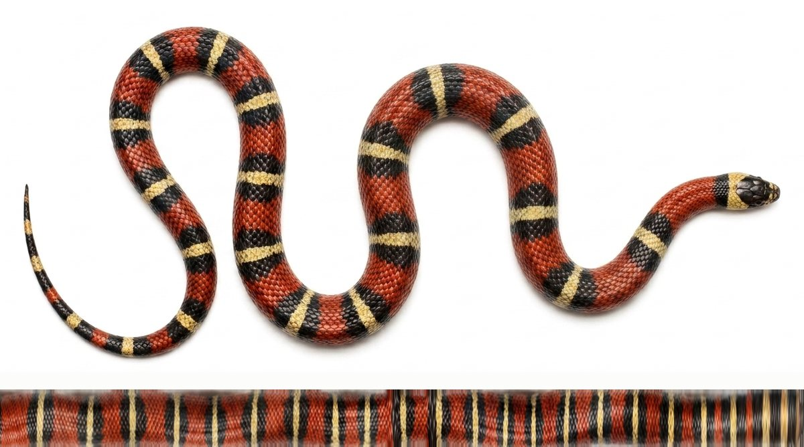
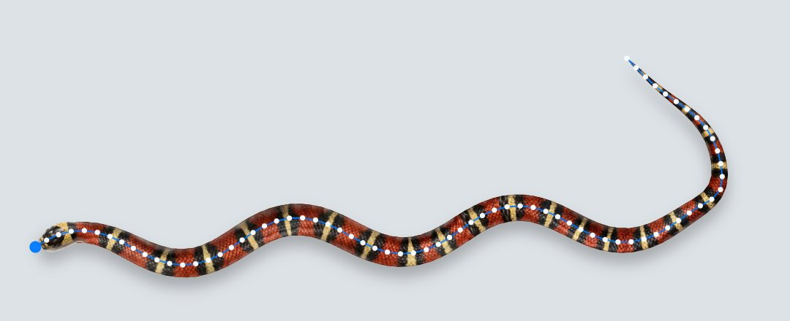
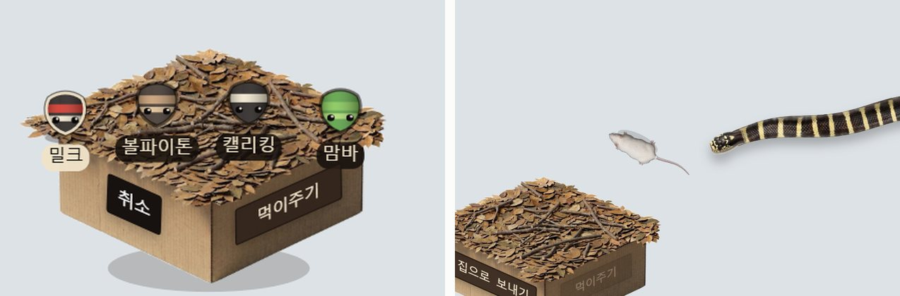

파충류를 좋아해서 만들었다. 컴퓨터를 쓰는 동안 뱀 한 마리가 모든 창 위를 기어다닌다. 밀크스네이크, 볼파이톤, 캘리포니아킹스네이크, 그린맘바 중에 고를 수 있고, 쥐를 풀어 주면 쫓아가 잡아먹는다. 그러면 몸통에 볼록한 덩어리가 지나가고 몸이 조금 길어진다. 쉬게 하고 싶으면 상자 집으로 보낸다.
뱀은 코드로 그린 도형이 아니다. 실제 뱀 사진에서 피부를 벗겨 내 길게 펼친 다음, 매 프레임 척추 모양에 맞춰 휘어 붙인다. 윈도우용이고, 설치 파일은 4.8MB다. 이 글은 그걸 어떤 순서로, 무엇으로 만들었는지와 중간에 걸린 것들을 적는다.

만든 순서 — 브라우저에서 다 끝내고 옮겼다
처음부터 데스크톱 앱으로 시작하지 않았다. 뱀이 뱀처럼 보이고 뱀처럼 움직이는지가 이 프로젝트의 전부라서, 그걸 먼저 브라우저에서 끝내고 창을 다루는 일은 나중에 붙였다.
← 옆으로 밀어 보기 →
프로토타입은 Claude Design에서 HTML 파일 하나로 만들었다. 오른쪽 위에 디버그 패널을 달아 놓고, 이동 속도·S자 흔들림의 크기와 빠르기·몸 굵기·무늬 배율·몸 길이를 슬라이더로 만져 가며 "진짜 뱀 같다"는 값을 찾았다. 사양서에도 이렇게 적어 뒀다. 이 패널이 이 프로토타입의 존재 이유다.
값이 정해지면 그 숫자를 PARAMS.json에 굳히고, 왜 그렇게 만들었는지를 설계 문서로 남겨 Claude Code에 넘겼다.
앱 쪽에서는 "프로토타입을 처음부터 다시 만드는 게 아니라 옮기는 것"이라고 못 박았다.
실제로 옮긴 뒤 원본과 바이트 단위로 대조해서, 의도한 세 가지 차이 말고는 같다는 걸 확인했다.
종마다 손으로 맞춘 값
| 종 | 속도 | S자 크기 | S자 빠르기 | 굵기 | 척추 점 |
|---|---|---|---|---|---|
| 밀크스네이크 | 73 | 15.0 | 1.15 | 22 | 69 |
| 볼파이톤 | 68 | 15.0 | 0.92 | 49 | 86 |
| 캘리포니아킹 | 75 | 15.5 | 1.22 | 22 | 75 |
| 그린맘바 | 82 | 17.0 | 1.40 | 22 | 79 |
맘바가 가장 빠르고 크게 흔들고, 볼파이톤은 두 배 넘게 굵은 대신 느리고 덜 흔든다. 실제 뱀의 성격을 숫자로 옮긴 것이다.
피부 — 사진에서 벗겨 내 척추에 입힌다
처음 사양서는 반대였다. "이미지 파일 사용 금지, 모든 시각 요소는 코드로 생성." 빨강·검정·크림 띠를 코드로 그리고, 원기둥 명암과 비늘 격자를 얹는 방식이었다. 그런데 같은 사양서의 품질 기준은 "코드로 그린 티가 안 나는 뱀"이었다. 프로토타입을 다듬는 사이 결국 사진으로 넘어갔다. 코드로 그리는 방식은 지금도 남아 있지만, 사진을 불러오기 전에 잠깐 쓰는 대체용이다.

mk-skin-s.png, 2624×96). 몸의 중심선을 따라가며 그 선에 수직으로 픽셀을 떠서 일자로 폈다.
처음 모은 레퍼런스 사진들은 몸이 겹쳐 있거나 배경이 깔린 것이 많았다. 밀크스네이크·캘리포니아킹·볼파이톤은 Gemini로 위에서 내려다본 흰 바탕 사진을 새로 만들어 원본으로 썼다. 몸이 한 번도 겹치지 않는 S자 자세라 중심선을 따라가기 좋다. 상자 집도 Gemini로 만들었다.
종마다 파일 세 개가 나온다.
| 파일 | 내용 |
|---|---|
*-skin.png | 펼친 몸통. 가로 = 목에서 꼬리 끝까지의 길이, 세로 = 몸 폭 |
*-head.png | 머리만 따로 오린 그림. 머리는 휘지 않으니 통째로 붙인다 |
*-taper.json | 굵기표. 가로 픽셀마다 "여기서 몸이 얼마나 굵은가"를 0~1로 적은 숫자 2,600여 개 |
매 프레임 하는 일
척추 점 69~86개
→ 두 번 부드럽게 다듬기
→ 3.6px 간격으로 다시 찍기 (위치 · 법선 방향 · 머리부터의 거리 · 굵기)
→ 조각마다 피부 한 줄을 휘어 붙이기 (ctx.transform + clip)
→ 원기둥 명암 9줄 + 윤곽선
→ 머리 그림 붙이기몸을 3.6px짜리 조각 수백 개로 자르고, 조각마다 피부 띠의 해당 부분을 기울여 붙인다. 몸이 휘면 무늬도 같이 휜다. 그 위에 세로 9줄의 반투명 띠를 겹쳐서 가운데 위쪽이 밝고 가장자리가 어두운 원기둥 느낌을 준다.
텍스처 워핑 — 평평한 그림을 휘어진 모양에 맞게 늘이고 기울여 붙이는 것. 여기서는 일자로 편 피부를 뱀의 현재 자세에 맞춰 다시 감는다.
법선 — 어떤 지점에서 선에 수직인 방향. 몸의 "폭 방향"이다. 피부 띠의 세로를 이 방향으로 세운다.
문제 1 — 몸이 마디진 것처럼 보였다
사진에서 잰 굵기표에는 ±10% 정도의 잔잔한 물결이 있었다. 사진 속 뱀이 휘어 있던 자리마다 폭이 조금씩 다르게 재진 것이다. 그대로 쓰니 몸통이 대나무처럼 마디져 보였다.
← 옆으로 밀어 보기 →
넓게 한 번, 좁게 한 번 흐리게 한 값을 위치에 따라 섞고, 가장 굵은 지점 이후로는 절대 다시 굵어지지 않게 강제했다.
그런데 굵기만 펴면 끝이 아니었다. 실루엣을 바꾼 만큼 피부 그림도 폭 방향으로 되돌려 다시 구워야 했다.
안 그러면 원래 좁았던 자리의 무늬가 늘어나 찌그러져 보인다. 픽셀 열마다 원래 굵기 ÷ 다듬은 굵기만큼 세로로 늘이거나 줄였다.
파일 이름 끝의 -s가 이렇게 다시 구운 판이다.
문제 2 — 볼파이톤만 목이 안 맞았다
머리 그림이 몸에 비해 작아 보여서, 목에서 코끝으로 갈수록 머리를 키우는 장치(headGrow)를 넣었다.
밀크·캘리킹은 1.46배, 맘바는 1.18배로 잘 맞았다.
볼파이톤은 키우자 머리 그림과 몸통의 무늬 축척이 달라져, 목의 밝은 줄이 몸통 줄무늬와 어긋났다.
그래서 볼파이톤만 원본 그대로 쓰고 머리를 키우지 않는다. 설계 문서에도 "의도된 결정"이라고 박아 뒀다. 나중에 누가 "왜 볼파이톤만 빠졌지?" 하고 고치지 않도록.
볼파이톤은 물리에서도 두개골 구간을 곧게 펴 준다(나머지 셋은 머리도 척추를 따라 휜다). 100% 곧게 펴니 급하게 돌 때 목이 프레임마다 튀었고, 그리기 단계에서만 펴니 척추와 어긋나 목 실루엣이 끊겼다. 두개골의 80%만 곧게, 목 쪽 4개 점에 걸쳐 서서히 풀어 주는 조합에서 둘 다 사라졌다.
움직임 — 머리가 간 길을 몸이 그대로 밟는다

뱀 = 점 69~86개로 된 줄. 스스로 움직이는 건 머리 하나뿐이다. 머리는 목표 방향, S자 흔들림, 벽과 상자 피하기를 합쳐서 방향을 잡는다. 나머지 점은 머리를 따라간다. 문제는 "어떻게 따라가게 하느냐"다.
← 옆으로 밀어 보기 →
머리 − i × 9px 지점에 놓는다.
흔한 방법은 각 점이 앞 점을 일정 거리로 끌려가듯 따라가게 하는 것이다. 이러면 머리가 멈췄을 때 몸이 계속 당겨지면서 펴진다. 실제 뱀은 그러지 않는다. 그래서 머리의 궤적을 기록하고 몸을 그 위에 놓는 방식을 택했다. 멈추면 몸도 그 자리에 그대로 선다. 관절 하나가 꺾일 수 있는 각도는 0.60 라디안(약 34°)으로 막아서 몸이 접혀 겹치지 않게 했다.
궤적 — 지나간 자리의 기록. 여기서는 머리 위치를 매 프레임 적어 두고, 각 위치에 "출발점부터 몇 px 왔나"(호길이)를 함께 붙인다.
곡선 안쪽에 틈이 생겼다
피부 조각은 평행사변형이다. 몸이 급하게 휘면 조각과 조각 사이, 곡선 안쪽에 쐐기 모양 빈틈이 생기고 그 사이로 바탕이 비쳤다. 꺾인 각도에 비례해 조각 폭을 부풀려 서로 겹치게 하고, 몸 밖으로 넘친 부분은 실루엣으로 잘라 냈다.
부풀린 폭 = 원래 폭 × (1 + min(0.35, 꺾인 각 × 1.1)) + 1상자 앞에서 제자리를 맴돌았다
← 옆으로 밀어 보기 →
상자를 피하는 힘을 "상자에서 멀어지는 쪽"으로만 주니, 목표가 상자 건너편에 있을 때 두 힘이 싸워 뱀이 그 자리를 빙글빙글 돌았다. 매 프레임 왼쪽·오른쪽을 새로 고르는 것도 원인이었다. 한 번 이쪽으로 돌기로 했으면 상자 반경을 벗어날 때까지 바꾸지 않게 했다. 그래도 2.4초 넘게 상자 근처에 머물면 목표를 새로 잡는다. 단, 쥐를 쫓는 중에는 목표를 버리지 않는다. 먹이를 포기하는 뱀은 없다.
쥐도 생각보다 손이 갔다
쥐가 방향을 순간이동처럼 바꾸면 장난감 같다. 쥐도 "가고 싶은 각도"만 바꾸고 회전 속도에 상한을 둬 서서히 튼다. 짧게 내달리고 잠깐 멈추기를 반복하고, 큰 방향 전환은 멈춰 있을 때만 한다. 뱀 머리가 250px 안으로 들어오면 반대쪽으로 도망가되, 가까울수록 빠르고(140) 멀면 느리다(48). 앱으로 옮기면서 평소 속도와 도망 속도를 같은 비율로 올렸다. 한쪽만 올리면 쥐의 성격이 바뀐다. 구석에 박히지 않게 벽 130px 안에서는 안쪽으로 꺾는다. 먹이 주기는 두 가지다. 그냥 풀어주기는 아무 데나 쥐를 놓고, 내가 직접 주기는 쥐가 커서에 붙어 따라와서 뱀을 유인할 수 있다.
상태 — 뱀이 지금 뭘 하고 있나
← 옆으로 밀어 보기 →
housed(몸이 상자에 다 들어간 상태)일 때만 "밖으로 부르기"가 먹는다. 들어가는 중에는 버튼이 반응하지 않는다.
먹고 나면 몸통에 볼록한 덩어리가 생겨 꼬리 쪽으로 천천히 내려간다. 사양서에 "디테일 하나로 완성도가 크게 오르는 부분"이라고 적어 둔 연출이다. 볼록이 머리 바로 뒤에서 시작하면 머리 그림과 몸 사이 이음새가 드러난다. 두개골은 단단해서 부풀 수 없으니, 목 뒤 12px부터 시작하고 목 경계에서는 0으로 사라지게 했다.
빠진 것도 있다. 처음 사양서에는 30초 동안 방해가 없으면 제자리에서 똬리를 트는 상태가 있었다. 작업 메모에는 똬리를 틀고 풀 때 몸이 원래 있던 길로 빠져나오지 않고 엉키는 느낌, 버벅임이 적혀 있다. 최종 프로토타입과 앱에는 똬리 상태가 없다. 쉬는 건 상자에 들어가서 한다. 상자에 들어갈 때 뒷벽을 뚫고 들어가는 장면도 메모에 남아 있다. 최종 설계 문서는 상자를 뚜껑 열린 상자로 정의한다. 위가 열려 있으니 어느 쪽에서든 벽을 넘어 들어가는 게 말이 된다.

데스크톱으로 — 구조
앱은 주 모니터 전체를 덮는 투명한 창 하나다. 테두리가 없고, 항상 맨 위에 있고, 작업표시줄에 안 뜬다. Tauri로 감쌌다. 바깥 껍데기는 Rust, 안쪽은 윈도우에 기본으로 깔린 웹뷰(WebView2)에서 도는 그 프로토타입 코드다.
← 옆으로 밀어 보기 →
Tauri — 웹 기술(HTML·JS)로 만든 화면을 데스크톱 앱으로 감싸는 도구. 화면은 운영체제에 이미 깔린 웹뷰로 띄우고, 창·트레이 같은 운영체제 일은 Rust 코드로 한다. 그래서 설치 파일이 작다.
IPC — 서로 다른 프로그램(여기서는 Rust와 웹뷰)끼리 메시지를 주고받는 것. invoke는 JS가 Rust에게, event는 Rust가 JS에게 보낸다.
클릭 통과 — 닭과 달걀
화면 전체를 덮는 창이 클릭을 다 먹으면 컴퓨터를 쓸 수가 없다. 반대로 다 흘려보내면 뱀을 만질 수 없다. 필요한 건 뱀·상자·버튼 위에서만 클릭을 받고, 나머지는 뒤의 앱으로 통과시키는 것이다.
윈도우에는 창 전체를 클릭 통과로 만드는 스위치가 있다. 문제는 이 스위치를 켜면 웹뷰가 마우스 이벤트를 하나도 못 받는다는 점이다. 그러면 커서가 뱀 위에 왔는지 알 수 없고, 알 수 없으니 스위치를 끌 수도 없다. 판정에 필요한 정보가 판정 결과 때문에 막힌다.
← 옆으로 밀어 보기 →
설계를 구현 직전에 뒤집었다
처음 계획은 반대였다. JS가 뱀의 히트 영역(척추 점 좌표들)을 계속 Rust에 보내고, Rust가 커서와 비교해 판정한다. 구현 직전에 따져 보니 이쪽이 훨씬 비쌌다.
| 계획 (Rust가 판정) | 채택 (JS가 판정) | |
|---|---|---|
| 매 프레임 메시지 | 척추 점 69~86개 좌표 | 없음 |
| 판정 코드 | Rust에 똑같이 다시 짜기 | 이미 있는 snake.hits() |
| 커서가 가만히 있을 때 | 그래도 계속 보냄 | 0건 |
| 버튼·메뉴 판정 | 좌표를 따로 넘겨야 함 | elementFromPoint 한 줄 |
마지막 줄이 결정적이었다. 버튼이나 메뉴를 좌표로 하나하나 넘기면 UI를 추가할 때마다 판정 코드를 고쳐야 한다. 브라우저에는 "이 좌표에 뭐가 있나"를 알려 주는 기능이 이미 있다. 그걸 쓰면 무엇을 추가하든 자동으로 걸린다.
경계에서 깜빡이지 않게 — 들어올 땐 넉넉히, 나갈 땐 천천히
← 옆으로 밀어 보기 →
히스테리시스 — 켜지는 기준과 꺼지는 기준을 일부러 다르게 두는 것. 온도 조절기가 24도에서 켜지고 26도에서 꺼지는 식이다. 경계에서 초당 수십 번 켜졌다 꺼지는 걸 막는다.
열 번에 한 번, 영영 안 풀렸다
처음에는 상태를 먼저 바꿔 놓고 Rust에 메시지를 보냈다. 그런데 열 번에 한 번꼴로 메시지가 유실되면 영영 복구되지 않았다. 코드는 이미 바꿨다고 믿으니 다시 보낼 이유가 없었던 것이다. 판정과 실제 창 상태가 어긋난 채로 굳었다.
// "원하는 상태"와 "Rust가 실제로 적용했다고 확인한 상태"를 따로 둔다
if (OVERLAY.want !== OVERLAY.applied && !OVERLAY.busy) {
core.invoke('set_click_through', { on: OVERLAY.want })
.then(() => { OVERLAY.applied = target; }, () => {});
}
// 어긋나 있으면 다음 프레임에 또 보낸다둘이 다르면 매 프레임 다시 시도한다. 바꾼 뒤 10번 중 10번 성공했다. 그리고 상자나 쥐를 끄는 중이거나 메뉴가 열려 있을 때는 커서 위치와 상관없이 클릭을 계속 받게 고정했다. 끌다가 통과가 켜지면 잡고 있던 걸 놓친다.
성능 — 항상 켜 두는 앱의 기준
켜 두고 잊어버리는 앱이라, 아무것도 안 할 때의 비용이 곧 제품 품질이다.
← 옆으로 밀어 보기 →
측정부터 틀렸다. 처음 잰 CPU는 0.2%였다. 그런데 WebView2는 화면 그리는 일을 별도 프로세스 여러 개로 띄운다. 앱 본체만 재면 실제의 10분의 1도 안 나온다. 본체 + WebView2 프로세스 6개를 합산하도록 고치자 숫자가 완전히 달라졌다.
쉬는 동안은 아예 안 그린다. 뱀이 상자에 들어가 있고 쥐도, 종 선택도, 끌기도 없으면 화면이 완전히 멈춰 있다.
이때는 물리 계산과 그리기를 통째로 건너뛴다. 멈춤에 들어간 첫 프레임만 그려서 마지막 모습을 남긴다.
커서도 화면도 그대로면 히트 판정까지 건너뛴다. elementFromPoint는 브라우저에게 레이아웃 계산을 시키는 비싼 호출이라서다.
켜 둔 시간의 대부분이 이 상태라 2.91%가 0.81%가 됐다.
바뀐 곳만 다시 그린다. 1920×1080 전체를 매 프레임 지우지 않고, 뱀·상자·쥐가 있는 사각형과 직전 프레임의 사각형을 합친 곳만 지우고 그린다. 900프레임을 돌린 뒤 그 영역 밖에 지워지지 않은 픽셀이 0개인 것까지 확인했다.
더티 사각형 — 화면에서 "이번 프레임에 바뀐 부분"만 표시해 두고 거기만 다시 그리는 방법. 화면이 크고 움직이는 물체가 작을수록 효과가 크다.
안 잠기게, 안 꺼지는 일 없게
| 걱정 | 대비 |
|---|---|
| JS가 죽으면? | 클릭 통과의 시작값이 켜짐이다. 앱이 망가져도 화면이 잠기지는 않는다. 실패해도 안전한 쪽으로만 열려 있다 |
| 끄는 법을 모르면? | 통과 중에는 창에 포커스가 안 와서 웹뷰 단축키가 안 먹는다. 운영체제 전역 단축키 Ctrl+Shift+Q로 끈다. 단축키를 모르는 사람을 위해 트레이에 "종료" |
| 해상도를 바꾸면? | Tauri는 "모니터가 바뀌었다"를 알려 주지 않는다. 1초마다 주 모니터를 확인해서 어긋나면 다시 맞춘다 |
| 배율 125%면? | 창을 물리 픽셀로 잡는다. 논리 크기로 잡으면 창이 화면보다 작아져 오른쪽·아래에 띠가 남는다 |
| 처음 켰을 때 | 상자만 보인다. 몸은 그리기 전에 미리 "들어가기"를 돌려 상자 안에 감아 둔다. 상태만 바꾸면 일자 막대가 상자에서 튀어나온다 |
배율(DPI) — 윈도우 디스플레이 설정의 125%·150%. 글씨를 크게 보이려고 "논리 1px"을 실제 점 여러 개로 그린다. 1920 물리 픽셀 = 1536 논리 픽셀 × 1.25.
배포 — 서명 없이 내보내기
무료 배포라 유료 코드 서명을 하지 않았다. 대가로 설치할 때 SmartScreen 경고가 뜬다. 깃허브 릴리스와 안내문에 "[추가 정보] → [실행]"을 적어 뒀다.
압축 파일로 내면 경고를 피할 수 있나도 실측해 봤다. 인터넷에서 받은 zip에는 "인터넷에서 왔음" 표시가 붙는데, 압축을 풀 때 그 표시가 안의 파일로 옮겨 가는지는 도구마다 달랐다. 윈도우 탐색기로 풀면 옮겨 가서 경고가 뜨고, PowerShell로 풀면 안 옮겨 가서 안 뜬다. 사람마다 쓰는 도구가 다르니 믿을 수 없는 방법이라 쓰지 않았다.
조용히 틀리는 함정도 하나 있었다. 아이콘 파일만 바꾸고 빌드하면 윈도우 리소스를 심는 단계(build.rs)가 다시 돌지 않아,
옛 아이콘이 박힌 실행 파일이 나온다. 오류는 하나도 없다. 그래서 빌드된 exe에서 아이콘을 도로 뽑아 확인하는 절차를 아이콘 스크립트 맨 위에 적어 뒀다.
SmartScreen — 윈도우가 처음 보는 프로그램을 실행하기 전에 띄우는 경고. 서명이 없고 내려받은 사람이 적으면 뜬다.
Mark-of-the-Web — 인터넷에서 받은 파일에 윈도우가 몰래 붙이는 "출처: 인터넷" 표시. SmartScreen이 이걸 보고 경고를 띄운다.
확인은 눈이 아니라 운영체제로
"클릭이 통과되는 것 같다"로 넘기지 않으려고, 대부분을 운영체제에 직접 물어 확인했다.
| 무엇을 | 어떻게 |
|---|---|
| 클릭 통과 | 커서를 프로그램으로 옮긴 뒤, 창의 통과 비트와 "지금 이 좌표의 클릭을 받는 창이 누구인가"를 윈도우 API로 확인 |
| 디스플레이 감시 | 해상도는 안 건드리고 창만 강제로 줄인 뒤 1초 안에 돌아오는지 |
| 아이콘 | 빌드된 exe에서 아이콘을 도로 뽑아 보기 |
| 종료 | 다른 앱에 포커스를 준 상태에서 단축키 → 프로세스가 사라지는지 |
안 한 것
- 맥. 투명 창에 별도 설정이 둘 필요하고 창 층위(레벨)·Dock 숨김도 따로 다뤄야 하는데, 눌러 볼 맥이 없었다. "될 것 같다"로 넣지 않았다.
- 보조 모니터. 모니터마다 배율이 다르면 좌표 계산이 깨지는데, 확인할 다중 모니터 환경이 없었다.
- 코드 서명. 무료 배포라.
맥은 이후 학사모 비프리 데스크톱 펫에서 풀었다. 깃허브의 맥 가상머신에서 빌드하고, 거기서 실제로 눌러 보는 것까지 자동으로 돌렸다. 투명 창, 클릭 통과, 트레이, 전역 단축키 — 비프리 펫의 뼈대 상당 부분이 이 뱀에서 먼저 부딪혀 본 것들이다.
정리
| 고른 것 | 한 줄 이유 |
|---|---|
| 브라우저 프로토타입 먼저 | 모양과 움직임이 전부인 앱. 앱 빌드 없이 숫자를 바로 만진다 |
| Claude Design → Claude Code | 보며 다듬는 일과 옮겨 짜는 일을 나눴다. 사이에 확정값과 설계 문서 |
| 사진 피부 | "코드로 그린 티가 안 나는 뱀"이 기준이었다 |
| 궤적 추종 | 멈추면 몸도 멈춘다. 실제 뱀처럼 |
| Tauri | 윈도우에 이미 있는 웹뷰를 쓴다. 설치 파일 4.8MB |
| 판정은 JS, 좌표는 Rust | 메시지가 거의 없고, 버튼이 늘어도 코드가 안 는다 |
| 원하는 상태 ≠ 적용된 상태 | 한 번 유실돼도 스스로 복구된다 |
| 쉬는 동안 안 그리기 | 켜 둔 시간 대부분이 쉬는 시간이다 |
돌아보면 이 프로젝트의 절반은 "진짜 같게"였고, 나머지 절반은 "방해하지 않게"였다. 앞의 절반은 브라우저에서 눈으로 숫자를 만지며 끝냈고, 뒤의 절반은 숫자로 쟀다. CPU를 잘못 재고 있었다는 것도, 메시지가 열 번에 한 번 사라진다는 것도 재 보기 전에는 몰랐다.
소스와 설치 파일은 github.com/gmk4513/snake-pet에 있다.